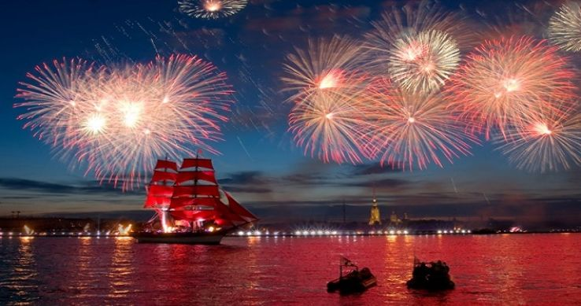
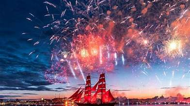
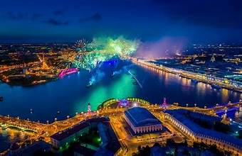
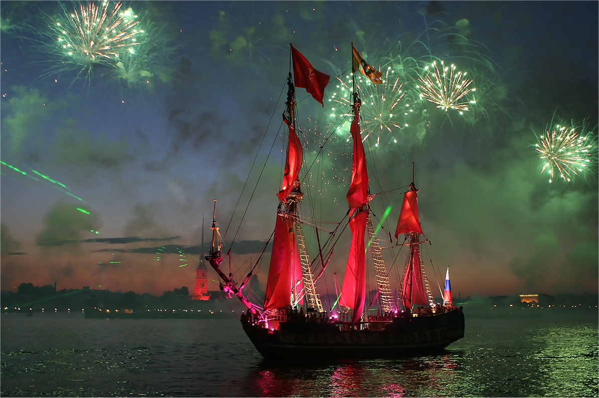
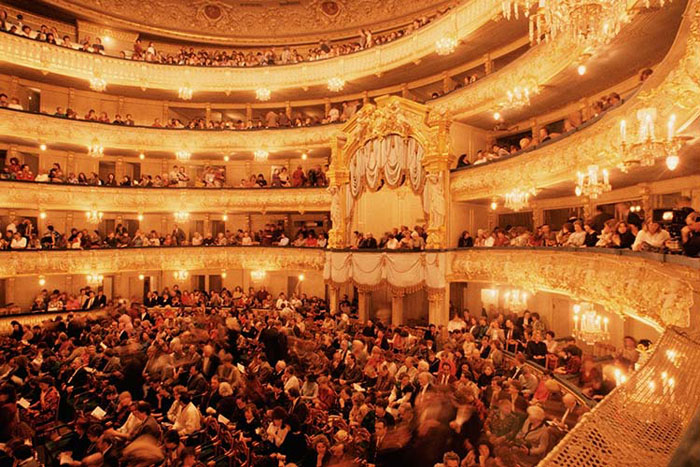
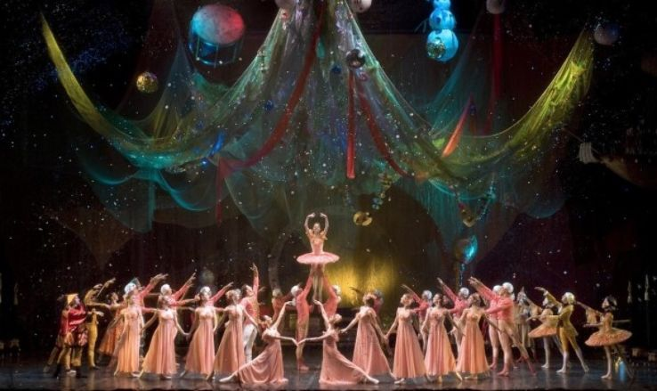

The White Night Festival is a celebration that takes place in cities located within the Arctic Circle, where the sun does not set for several days during the summer. It is a time of joy, music, and cultural events that showcase the unique experience of living in regions with extended daylight.
The festival has its roots in the ancient traditions of the Indigenous peoples of the Arctic, who celebrated the prolonged daylight with various rituals and ceremonies. In modern times, the White Night Festival has evolved into a vibrant celebration that attracts visitors from around the world.
The festival features a variety of activities including traditional music and dance performances, art exhibitions, and outdoor concerts. Visitors can also enjoy special cuisine and participate in local traditions that highlight the region's rich cultural heritage.
Core programming centers on the “Stars of the White Nights” festival hosted by the Mariinsky Theatre, featuring world-class ballet, opera, and symphonic concerts. Performances often include works by Russian composers such as Pyotr Ilyich Tchaikovsky and Modest Mussorgsky, attracting both Russian and international artists.
For local Indigenous groups such as the Buryats, Lake Baikal holds deep spiritual significance. It is also a central feature in Russian literature, art, and conservation movements. Environmental pressures—industrial pollution, climate change, and tourism—pose ongoing challenges to its fragile ecosystem, prompting national and international conservation initiatives.
The best time to experience the White Night Festival is during the summer months, particularly in June and July, when the phenomenon of the midnight sun occurs. During this time, visitors can enjoy the unique atmosphere of continuous daylight and participate in the various festivities that take place throughout the region.


